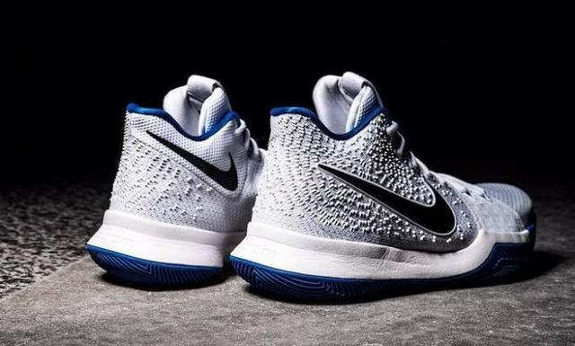
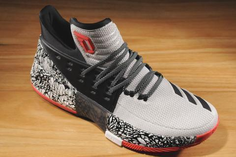
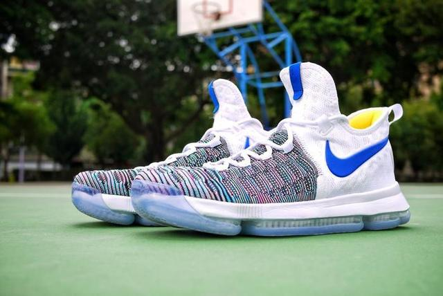
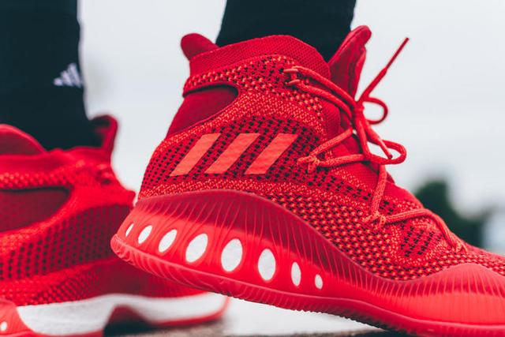

Nike Kyrie 3 雖然我是歐文的粉絲，但是很明顯這不是一雙好鞋，當然除了一流的啟動性。歐文3犧牲了前掌緩震從而加強了球鞋的啟動性，所以很明顯這雙鞋只適合那些小體重的後衛。但是對於非常需要啟動性的後衛來說，這雙鞋就是他們要找的那雙鞋。
 adidas DAME 3 說到後衛簽名鞋，就不得不提到利拉德系列。雖然三代不及上一代，而且還有壓腳背的現象，但是不得不說，它比歐文3要更好。在別的方面都好過歐文3的同時，啟動性也是一流，不差歐文3很多。如果想要啟動性好同時兼顧一點緩震的話，那利拉德3更適合你。  Nike KD9 如果不是斷管這種設計失誤，可能KD9已經是Nike銷量最好的幾雙鞋之一了。想一下從詹10到現在，似乎Zoom Max的耐用性還是沒有解決。可能不斷管，也會有鼓包的問題。當然了，除了斷管，這雙鞋的包裹和緩震，還是超一流的。  